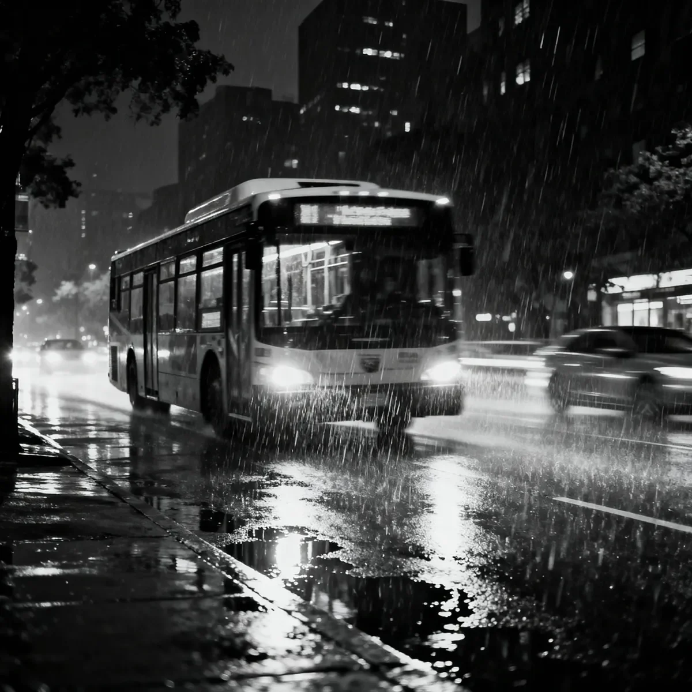

어떤 날 밤의 노선은 시처럼 느껴졌고, 또 어떤 날은 고해성사 같았다. 오늘 밤은 진행 중인 범죄처럼 느껴졌다.
[Some nights the route was a poem, others a confession. Tonight felt like a crime in progress.]
제이크의 손가락이 와이퍼 소리에 맞춰 운전대를 두드렸다. 15년 동안 이 노선을 운전하면서 그는 기상학자가 구름을 읽듯이 승객들을 읽는 법을 배웠다, 그들이 만들어내는 형태, 그들이 지닌 압박감, 그리고 그들이 몰고 올 폭풍을.
[Jake’s fingers drummed against the wheel in time with the wipers. Fifteen years on this route had taught him to read passengers like a meteorologist reads clouds, the shapes they made, the pressure they carried, the storms they might bring.]
따로따로 탑승했던 세 사람은 마치 화합물을 이루려는 원소들처럼 서로를 찾아냈다. 우연이 아닌, 화학적 결합이었다.
[The three who’d boarded separately had found each other like elements seeking compound. Chemistry, not coincidence.]
여자는 발목을 교차해서 다리를 꼬고 앉았고, 빨간 밑창의 구두가 작은 움직임마다 빛을 반사했다. 계절에 비해 너무 두꺼운 그녀의 코트는 무릎 위에서 떨어질 줄 몰랐다. 그녀 옆에 앉은 젊은 남자는 제이크가 알아챈 특유의 진동을 내뿜고 있었다: 공포와 흥분 사이를 오가는 사람만이 낼 수 있는 그런 떨림이었다. 그의 무릎은 오직 공포만이 만들어낼 수 있는 리듬으로 떨리고 있었다.
[The woman sat with her legs crossed at the ankles, red-soled shoes catching light with each small movement. Her coat, too heavy for the season, never left her lap. The younger man beside her vibrated with a frequency Jake recognized: the pitch of someone strung between terror and exhilaration. His knee bounced to a rhythm only panic could compose.]
관자놀이가 희끗한 세 번째 사람, 무기와도 같은 침착함을 지닌 그 사람, 이 제이크의 입안을 바싹 마르게 했다. 그는 이런 특별한 종류의 평온함을 전에도 본 적이 있었다. 인간 태풍의 눈과도 같은 그것을.
[It was the third one, silver at the temples, stillness like a weapon, who made Jake’s mouth go cotton-dry. He’d seen that particular brand of calm before. The eye of human hurricanes.]
“웨스트레이크 역에 접근 중입니다,” 제이크는 거의 빈 버스를 향해 가슴속의 불안감과는 달리 침착한 목소리로 안내했다.
[“Approaching Westlake Station,” Jake announced to the near-empty bus, voice steady despite the discord in his chest.]
백미러로 보니 여자가 일행들 쪽으로 몸을 기울였다. “—타이밍이 더 중요해—” 나머지 말은 버스가 연석에 멈추며 내는 기계음에 묻혀 사라졌다.
[In the rearview, the woman leaned toward her companions. “—timing matters more than—” The rest dissolved into the mechanical groan of the bus kneeling to the curb.]
내리는 사람도, 타는 사람도 없었다. 제이크는 다시 차선으로 들어섰다.
[No one disembarked. No one boarded. Jake pulled back into traffic.]
도시는 젖은 빛줄기로 스쳐 지나갔다. 반사된 것의 반사. 거울의 미로처럼 뒷자리의 세 사람을 포함해 아무것도 보이는 그대로가 아닌 것 같았다.
[The city slid by in wet streaks of light. Reflections of reflections. A hall of mirrors where nothing was quite what it seemed, including, perhaps, the trio in the back.]
“너무 과민반응하는 거야,” 제이크는 스스로에게 말했다. 세 사람이 대화하는 게 범죄는 아니었다. 그의 상상력이 평범한 일상을 통속소설로 만들어내며 과잉 작동하고 있었다.
[“You’re being ridiculous,” Jake told himself. Three people talking wasn’t a crime. His imagination was working overtime, spinning pulp fiction from ordinary life.]
그때 희끗한 머리의 남자가 자세를 바꾸었고, 제이크는 그의 재킷에 눌린 분명한 윤곽을 발견했다. 상상이 아니었다. 소설도 아니었다.
[Then the silver-templed man shifted, and Jake caught the unmistakable outline pressing against his jacket. Not imagination. Not fiction.]
제이크는 침을 삼키며 목이 달각거렸다. 무전기 버튼은 오른손에서 겨우 7.6센티미터 떨어져 있었다. 한 번만 누르면 됐다. 관제실에 알리기 위해 필요한 건 그게 전부였다. 다음 정류장에서 경찰이 대기하고 있을 것이다.
[Jake’s throat clicked as he swallowed. The radio button was three inches from his right hand. One press. That’s all it would take to alert dispatch. They’d have police waiting at the next stop.]
하지만 만약 자신이 틀렸다면?
[But what if he was wrong?]
젊은 남자의 목소리가 앞으로 들려왔다: “—또 다른 위험은 감수할 수 없어—”
[The younger man’s voice carried forward: “—can’t risk another—”]
“그만.” 나이 든 남자의 명령이 버스의 주변 소음을 가르며 울렸다. 백미러로 제이크와 마주친 그의 눈빛은 흔들림이 없었다. “우리 기사님은 귀가 아주 밝으시네요.”
[“Enough.” The older man’s command sliced through the bus’s ambient noise. His eyes, meeting Jake’s in the mirror, didn’t waver. “Our driver has excellent hearing.”]
둘 사이의 공기가 굳어버렸다.
[The air between them solidified.]
제이크의 손이 무전기 근처에서 맴돌았다. “다음 정류장이 다가오고 있습니다,” 그가 말했다, 그 뒤에 숨은 계산들을 전혀 드러내지 않는 목소리로.
[Jake’s hand hovered near the radio. “Next stop coming up,” he said, voice betraying nothing of the calculations running behind it.]
여자가 미소를 지었다, 그 표정은 그녀의 얼굴을 매혹적인 것에서 거의 친절해 보이는 것으로 바꾸어 놓았다. “여기서 내리겠습니다.” 그녀는 무릎 위의 코트를 토닥였다. “긴 밤이 될 것 같네요.”
[The woman smiled, a gesture that transformed her face from striking to almost kind. “We’ll be getting off here.” She patted the coat in her lap. “Long night ahead.”]
버스가 속도를 늦추자, 세 사람은 수술팀처럼 숙련된 효율성으로 자리에서 일어났다. 나이 든 남자가 앞으로 다가와 제이크가 문을 열 때 너무 가까이 서 있었다.
[As the bus slowed, the three gathered themselves with the practiced efficiency of a surgical team. The older man approached the front, standing too close as Jake opened the doors.]
“우리에 대해 궁금해하고 계셨죠,” 그가 말했다, 질문이 아닌 사실의 진술로.
[“You’ve been wondering about us,” he said, not a question but a statement of fact.]
제이크는 그의 시선을 마주보았다. “승객들이 내 버스에서 내린 후에 무얼 하든 제 알 바가 아닙니다.”
[Jake met his gaze. “Not my business what passengers do after they leave my bus.”]
“현명한 처신이 되겠군요.” 남자의 미소는 눈까지 닿지 않았다. “어떤 기사들은 우리가 내린 후에 전화를 걸고 싶은 충동을 느낄 수도 있겠죠. 그건… 불행한 일이 되겠습니다.”
[“A philosophy that will serve you well.” The man’s smile didn’t reach his eyes. “Some drivers might feel compelled to make a call after we exit. That would be… unfortunate.”]
위협이 그들 사이에 걸려 있었다, 유리 세공품처럼 섬세하게.
[The threat hung between them, delicate as spun glass.]
“말씀드렸다시피,” 제이크가 대답했다, “제 알 바가 아닙니다.”
[“Like I said,” Jake replied, “not my business.”]
남자는 고개를 한 번 끄덕이고는 인도에서 기다리는 일행에게 합류했다. 여자는 뒤돌아보았고, 후회처럼 보이는 감정이 그녀의 얼굴을 스치더니 밤이 그들을 삼켜버렸다.
[The man nodded once, then joined his companions on the sidewalk. The woman glanced back, a moment of what might have been regret crossing her features before the night absorbed them.]
제이크는 문을 닫았다. 방향지시등을 켜고 연석에서 출발할 때 그의 손이 살짝 떨렸다. 무전기는 그대로 남겨졌다.
[Jake closed the doors. His hand trembled slightly as he signaled and pulled away from the curb. The radio remained untouched.]
남은 근무 시간은 정차와 출발, 승객들의 승하차가 흐릿하게 지나갔고, 아무도 인상에 남지 않았다. 차고지로 돌아올 때쯤, 의심이 그를 갉아먹기 시작했다. 정말로 총이 있었던 걸까? 그 위협은 실제였을까, 아니면 상상이었을까?
[The rest of his shift passed in a blur of stops and starts, passengers boarding and departing, none leaving an impression. By the time he returned to the depot, doubt had begun its corrosive work. Had there really been a gun? Had the threat been real or imagined?]
그는 새벽 2시 17분에 퇴근 체크를 하고, 지나가는 야간 감독관에게 고개를 끄덕였다.
[He clocked out at 2:17 AM, nodding to the night supervisor as he passed.]
“어이, 제이크,” 그녀가 뒤에서 불렀다. “미술관 소식 들었어? 오늘 밤에 무슨 귀중한 원고가 도난당했대. 깔끔한 작업이었다더라.”
[“Hey, Jake,” she called after him. “You hear about the art gallery? Some valuable manuscript got lifted tonight. Clean job, they’re saying.”]
제이크의 발걸음이 흔들렸다. “아니. 못 들었네요.”
[Jake’s steps faltered. “No. Didn’t hear.”]
“용의자가 세 명이래. 아직 단서는 없대.” 그녀는 고개를 저었다. “세상이 지옥으로 가고 있어.”
[“Three suspects. No leads yet.” She shook her head. “World’s going to hell.”]
“그래요,” 제이크가 말했다, 그 말이 입 안에서 재처럼 씁쓸했다. “지옥으로 가고 있죠.”
[“Yeah,” Jake said, the word ashen in his mouth. “Going to hell.”]
집에 와서 그는 버번 위스키를 두 손가락 높이로 따르고 뉴스를 켰다. 미술관 강도 사건이 첫 번째 뉴스였다. 보안 카메라 영상에는 세 명이 따로 들어갔다가 함께 나오는 모습이 보였다. 얼굴들은 낮은 해상도와 교묘한 각도로 흐릿했지만, 제이크는 그 여자의 특징적인 걸음걸이와, 젊은 남자의 불안한 에너지, 나이 든 남자의 위압적인 침착함을 알아볼 수 있었다.
[At home, he poured two fingers of bourbon and turned on the news. The gallery heist led the broadcast. Security footage showed three figures entering separately, leaving together. The faces were blurred by poor resolution and clever angles, but Jake recognized the woman’s distinctive walk, the younger man’s nervous energy, the older man’s commanding stillness.]
도난당한 원고는 수백만 달러의 가치가 있는 중세 시대의 문서였는데, 너무나 그럴듯한 모조품으로 교체되어 폐관 시 재고 확인 때까지 도난 사실을 발견하지 못했다고 했다.
[The stolen manuscript, a medieval text worth millions, had been replaced with a replica so convincing that the theft wasn’t discovered until closing inventory.]
제이크는 잔을 비웠고, 술이 위장까지 타들어가는 느낌이었다. 그는 알고 있었다. 그의 어떤 부분은 정확히 무슨 일이 벌어지고 있는지 알고 있었고, 그는 아무것도 하지 않았다.
[Jake drained his glass, the liquor burning a path to his gut. He’d known. Some part of him had known exactly what was happening, and he’d done nothing.]
그의 휴대폰이 커피 테이블 위에 놓여 있었다. 제보 전화를 걸어 승객들의 특징과, 대화 조각들, 암시된 위협에 대해 설명할 수 있었다. 그때 했어야 했던 일을 지금이라도 할 수 있었다.
[His phone sat on the coffee table. He could call the tip line, describe the passengers, the conversation fragments, the implied threat. He could do now what he should have done then.]
대신, 그는 술을 한 잔 더 따랐다.
[Instead, he poured another drink.]
뉴스는 다른 이야기들로 넘어갔다, 정치 스캔들, 기후 재앙, 일상적인 종말. 제이크는 보지 않은 채로 화면을 응시했고, 자신의 무대응이 주는 무게가 계절에 맞지 않게 무거운 코트처럼 그의 어깨를 짓눌렀다.
[The news moved on to other stories, political scandals, climate disasters, the everyday apocalypse. Jake watched without seeing, the weight of his inaction settling around his shoulders like a coat too heavy for the season.]
사흘 후, 같은 노선을 운전하던 중 제이크는 그 세 사람이 앉았던 자리에서 작은 꾸러미를 발견했다. 평범한 갈색 포장지에 정교한 글씨체로 그의 이름이 쓰여 있었다.
[Three days later, driving the same route, Jake noticed a small package on the seat where the trio had sat. Plain brown paper, his name written in precise letters.]
안에는 책이 들어있었다. 도난당한 원고는 아니었고, 같은 문헌의 현대판이었다. 책갈피가 페이지 사이로 삐져나와 있었다. 제이크는 표시된 구절을 펼쳤다:
[Inside: a book. Not the stolen manuscript, but a modern edition of the same text. A bookmark protruded from its pages. Jake opened to the marked passage:]
“목격하고도 침묵하는 것은 그 행위의 공범이 되는 것이다.”
[“To witness and remain silent is to become accomplice to the deed.”]

그 아래에는 손글씨로 쓴 쪽지가 있었다: “우리는 모두 선택을 합니다. 당신의 선택이 우리의 일을 가능하게 했죠. 편히 주무세요.”
[Beneath it, a handwritten note: “We all make choices. Yours made our work possible. Sleep well.”]
제이크는 책을 닫았고, 그의 손가락이 표지에 축축한 자국을 남겼다. 그는 책을 자신의 좌석 밑으로 밀어넣고 운행을 계속했다. 도시는 젖은 빛줄기로 스쳐 지나갔고, 반사된 것의 반사 속에서, 버스 안에서는 공범의 무게가 그와 함께 탑승했다, 결코 내리지 않을 승객처럼.
[Jake closed the book, his fingers leaving damp impressions on the cover. He slipped it under his seat and continued his route, the city sliding by in wet streaks of light, reflections of reflections, while inside the bus, the weight of complicity rode alongside him, a passenger that would never disembark.]